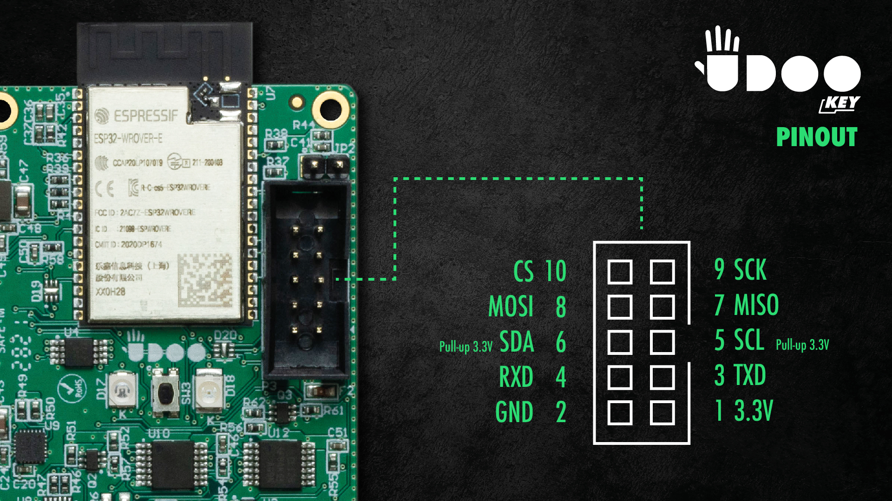

ESP32

The UDOO KEY is powered by Espressif ESP32-WROVER-E MCU module, a powerful and versatile platform for Edge AI applications, ranging from low-power sensor networks to the most demanding tasks, such as voice encoding, music streaming and MP3 decoding. This module is provided with a PCB antenna.
This fully programmable microcontroller is based on a dual-core Xtensa 32-bit LX6, with a 16 MB internal SPI flash memory, an additional 8 MB SPI Pseudo Static RAM (PSRAM), Wi-Fi and Bluetooth.
The core of the module is the ESP32-D0WD-V3 chip, which is designed to be scalable and adaptive. It features two CPU cores that can be individually controlled, and the CPU clock frequency is adjustable from 80 MHz to 240 MHz. The chip is also provided with a low-power co-processor that can be used instead of the CPU to save power while performing tasks that do not require much computing power, such as perihperals monitoring.
Thanks to the ESP32 on board, you get full Wi-Fi 802.11b/g/n connectivity, Bluetooth and BLE v4.2. This ensures the UDOO KEY extreme versatility: the Wi-Fi allows to set up direct connection to the internet through a Wi-Fi router, while using the Bluetooth users can connect to their phones or broadcast low energy beacons for its detection.
Note that the ESP32 on board is not just a Wi-Fi, BT & BLE module. It gives you full access to the firmware of ESP32 and you can program it as you please. The sleep current of the ESP32 chip is less than 5 µA, making it suitable for battery powered and wearable electronics applications. The module supports a data rate of up to 150 Mbps, 802.11b at 13.5dBm, and 802.11g/n at 18.5 dBm of output power to the antenna to ensure the widest physical range. The module thus offers industry-leading specifications and the best performance for electronic integration, range, power consumption, and connectivity. Secure (encrypted) over the air (OTA) upgrade is also supported, so that users can upgrade their products even after their release, at minimum cost and effort. For further information on Espressif ESP32, please refer to the dedicated page on espressif.com.
In order to be able to interface the ESP32 with external integrated circuits, the target MCU is equipped with an UEXT connector following the pin map as reported in the table below.
| Pin number | Schematic pin name | ESP GPIO | Description |
|---|---|---|---|
| 1 | 3V3 | - | 3.3V output, 150mA max |
| 2 | GND | - | Power ground |
| 3 | EXT_UART2_TX | GPIO13 | UART transmission line |
| 4 | EXT_UART2_RX | GPIO26 | UART reception line |
| 5 | ESP32_SCL | GPIO21 | I²C clock line |
| 6 | ESP32_SDA | GPIO18 | I²C data line |
| 7 | SPI_MISO | GPIO35 | SPI Microcontroller in / Sensor out |
| 8 | SPI_MOSI | GPIO12 | SPI Microcontroller out / Sensor in |
| 9 | SPI_SCK | GPIO14 | SPI clock |
| 10 | SPI_CS | GPIO15 | SPI chip select |